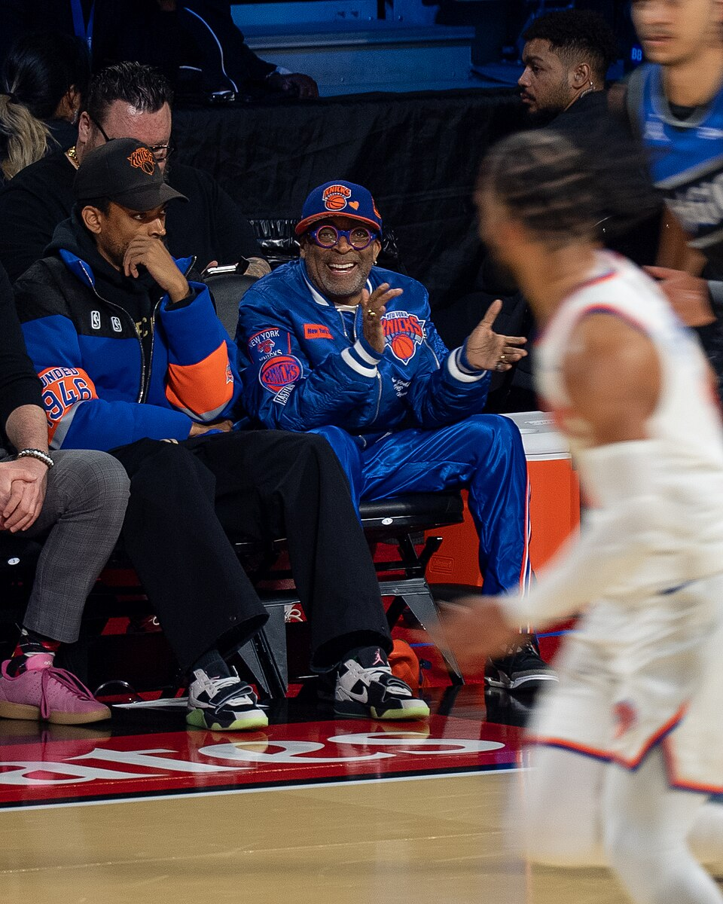

A NBA Cup ainda é uma competição jovem, mas já conquistou um espaço próprio no calendário da maior liga de basquete do mundo. O torneio foi lançado na temporada 2023/24 com o nome NBA In-Season Tournament e nasceu com uma proposta incomum para o esporte profissional dos Estados Unidos: disputar uma copa paralela sem interromper o campeonato principal.
Na prática, quase todas as partidas da NBA Cup também valem pela temporada regular. Ao mesmo tempo, resultados específicos desses jogos formam uma classificação própria, que conduz os melhores times para um mata-mata e termina com a disputa de um troféu separado do tradicional título das Finais da NBA.
A ideia permite à liga criar jogos com pressão de eliminação ainda nos primeiros meses da temporada, período em que cada franquia normalmente está apenas começando a longa caminhada de 82 partidas. A própria NBA define entre os objetivos da competição oferecer outro título para jogadores e equipes, criar uma nova forma de engajamento dos torcedores e gerar mais interesse na primeira parte da temporada regular.
O que é a NBA Cup
É o torneio de meio de temporada da NBA. As 30 franquias participam e continuam normalmente envolvidas na temporada regular enquanto disputam a competição.
Esse detalhe é fundamental para entender o formato. A NBA não criou um calendário totalmente separado no qual os clubes precisam jogar dezenas de partidas adicionais. Os jogos da fase de grupos e das primeiras fases eliminatórias também fazem parte da temporada regular. Apenas a final fica fora da classificação oficial das 82 partidas.
Assim, um confronto entre Lakers e Warriors, por exemplo, pode valer simultaneamente como jogo da NBA Cup e como partida da temporada regular. O resultado entra no retrospecto oficial das equipes e, ao mesmo tempo, influencia a classificação dentro do grupo da Copa.
A proposta se tornou mais fácil de entender com o passar das edições. A NBA utiliza identidade visual própria, quadras especiais para os jogos da competição e noites específicas dedicadas ao torneio, deixando claro para o público quando determinada partida também vale pela nova competição.
A primeira edição aconteceu na temporada 2023/24. Na época, o nome oficial era NBA In-Season Tournament.
A discussão, entretanto, era bem anterior. Adam Silver já falava publicamente sobre a possibilidade de um torneio durante a temporada desde pelo menos 2016. Entre as referências estavam competições de copa comuns no futebol europeu, nas quais clubes podem disputar simultaneamente uma liga de pontos corridos e torneios eliminatórios.
A novidade finalmente estreou em novembro de 2023.
Na edição inaugural, o Los Angeles Lakers chegou à decisão contra o Indiana Pacers e venceu por 123 a 109. LeBron James foi eleito o MVP da competição e se tornou o primeiro jogador a conquistar o prêmio.
Em fevereiro de 2024, a NBA anunciou uma parceria global de vários anos com a Emirates. A empresa passou a ser patrocinadora principal do torneio, que deixou oficialmente o nome NBA In-Season Tournament e passou a ser chamado Emirates NBA Cup.
O formato da competição
O modelo básico divide a competição em duas partes: fase de grupos e mata-mata.
Na primeira fase, os 30 times são separados entre Conferência Leste e Conferência Oeste. Cada conferência recebe três grupos de cinco franquias, totalizando seis grupos.
O sorteio não é totalmente livre. Antes da definição das chaves, os 15 times de cada conferência são distribuídos em cinco potes de acordo com a campanha obtida na temporada regular anterior.
O pote 1 reúne os três melhores registros da conferência; o pote 2 reúne do quarto ao sexto; o pote 3, do sétimo ao nono; o pote 4, do décimo ao 12º; e o pote 5, do 13º ao 15º. Depois, um representante de cada pote é sorteado para cada grupo. A intenção é produzir chaves mais equilibradas a partir do desempenho recente das franquias.
Cada equipe disputa quatro partidas na fase de grupos: uma contra cada adversário da própria chave. São dois jogos em casa e dois fora.
O mata-mata
Oito equipes deixam a fase de grupos e chegam às rodadas eliminatórias.
Classificam-se os seis campeões de grupo — três do Leste e três do Oeste — mais um wild card de cada conferência. Essa vaga extra fica com a equipe de melhor campanha entre aquelas que terminaram em segundo lugar em seus respectivos grupos.
A partir daí, a competição vira mata-mata em jogo único.
Não há séries de melhor de sete como nos tradicionais playoffs da NBA. Quartas de final, semifinais e decisão seguem a lógica de vencer ou ser eliminado.
Saldo de pontos faz diferença
Uma das características mais diferentes da NBA Cup aparece nos critérios de desempate.
Quando duas ou mais equipes terminarem empatadas dentro de um grupo, a NBA utiliza uma sequência de critérios. Pelas regras da edição de 2026, o primeiro é o confronto direto. Depois aparecem saldo de pontos na fase de grupos e total de pontos marcados.
O saldo transformou os minutos finais de algumas partidas em situações pouco comuns para a NBA. Mesmo com uma vitória praticamente definida, uma equipe pode continuar buscando pontos porque a diferença no placar pode determinar uma classificação futura.
A lógica é comum em outras competições internacionais e foi uma das novidades mais debatidas desde a primeira edição.
Importância para a temporada regular
Os jogos da fase de grupos, quartas de final e semifinais também fazem parte da temporada regular. As equipes continuam disputando 82 jogos oficiais.
A final é diferente. Ela existe exclusivamente para definir o campeão da NBA Cup e não entra na classificação da temporada regular. Dessa forma, os dois finalistas efetivamente disputam uma partida adicional em relação ao calendário tradicional.
A integração resolve um dos maiores desafios do projeto. A NBA conseguiu criar um torneio novo sem adicionar uma competição inteira sobre um calendário que já é extenso.
Onde será disputada
A NBA Cup não fica concentrada em uma única cidade. Durante a fase de grupos, os jogos são realizados nas arenas das próprias franquias, com cada equipe fazendo duas partidas em casa e duas fora. As quartas de final e as semifinais de 2026 também serão disputadas em mercados da NBA.
A grande decisão será diferente. A final da NBA Cup 2026 está marcada para 11 de dezembro no Hinkle Fieldhouse, em Indianapolis, Indiana. A histórica arena da Butler University será o palco neutro que definirá o quarto campeão da competição. A escolha também marca uma mudança em relação às primeiras edições, que tiveram Las Vegas como principal sede das fases decisivas.
As datas da NBA Cup 2026
Começa em 30 de outubro e terá sete noites específicas de jogos pela fase de grupos. As 60 partidas dessa etapa serão distribuídas pelas seguintes datas:
- 30 de outubro — abertura da fase de grupos
- 6 de novembro
- 13 de novembro
- 20 de novembro
- 24 de novembro
- 25 de novembro
- 27 de novembro — encerramento da fase de grupos
Depois, os oito classificados avançam para o mata-mata.
Quartas de final:
- 4 de dezembro
- 5 de dezembro
Semifinais:
- 8 e/ou 9 de dezembro
Final:
- 11 de dezembro
Como assistir à NBA Cup 2026
Para o público brasileiro, o Prime Video faz parte do acordo de transmissão da NBA e disponibiliza jogos da liga no país. A grade específica da NBA Cup para o Brasil, porém, pode variar de acordo com a programação definida para cada rodada. Por isso, horários e canais de cada partida devem ser consultados nas plataformas oficiais mais próximo dos jogos.
Os impactos da nova competição
O principal está no valor esportivo e comercial do início da temporada.
A NBA possui uma estrutura naturalmente voltada para seus grandes eventos: rodada de Natal, All-Star Weekend, reta final da temporada regular, Play-In e principalmente os playoffs e as Finais. Nos primeiros meses, porém, ainda existe muito caminho até que a classificação seja decidida.
A NBA Cup tenta preencher justamente esse espaço.
A liga afirma oficialmente que o torneio oferece aos times outro campeonato para conquistar, cria uma nova experiência de acompanhamento para os fãs e aumenta o interesse na parte inicial da temporada.
Em vez de uma partida de novembro representar apenas o 15º ou 20º jogo de uma campanha de 82 compromissos, ela pode valer a liderança do grupo, eliminação ou classificação para o mata-mata.
É uma maneira de produzir urgência esportiva muito antes dos playoffs.
Ao mesmo tempo, a Copa cria outro produto relevante dentro da estrutura comercial da NBA: há troféu próprio, MVP, seleção dos melhores jogadores do torneio, quadras diferenciadas, patrocinador específico e partidas de grande exposição.
Premiação também é atrativo aos atletas
A NBA mantém uma premiação financeira destinada aos jogadores das equipes que alcançam a fase eliminatória, com valores maiores conforme o avanço na competição. A estrutura faz do título uma conquista esportiva e também cria incentivo financeiro adicional para os elencos.
Na edição inaugural de 2023, por exemplo, a NBA estabeleceu US$ 500 mil por jogador da equipe campeã, US$ 200 mil para os atletas do vice, US$ 100 mil para jogadores derrotados nas semifinais e US$ 50 mil para aqueles eliminados nas quartas de final. Esses valores são referentes especificamente à primeira edição e podem ser modificados pela liga em temporadas posteriores.
Os campeões da NBA Cup
Nas três primeiras edições, três franquias diferentes levantaram o troféu:
- 2023 — Los Angeles Lakers
- Final: Lakers 123 x 109 Indiana Pacers
- MVP: LeBron James
- 2024 — Milwaukee Bucks
- Final: Bucks 97 x 81 Oklahoma City Thunder
- MVP: Giannis Antetokounmpo
- 2025 — New York Knicks
- Final: Knicks 124 x 113 San Antonio Spurs
- MVP: Jalen Brunson
O caso do New York Knicks aumentou ainda mais o peso simbólico da competição. Depois de conquistar a NBA Cup de 2025, a franquia também venceu as Finais da temporada 2025/26 diante do San Antonio Spurs, tornando-se a primeira equipe a ganhar a Copa e o campeonato da NBA na mesma temporada.
Foi uma temporada histórica para Nova York, detalhada também na conquista dos Knicks nas Finais de 2026.
O troféu da NBA Cup
A competição também recebeu uma taça exclusiva desde a edição inaugural.
A NBA Cup foi produzida pela Tiffany & Co. em colaboração com o artista Victor Solomon. O design utiliza prata, acabamento dourado e elementos em preto, diferenciando visualmente a taça dos outros troféus tradicionais da liga.
A criação de uma identidade própria não é um mero detalhe. Para que um torneio novo ganhe tradição, ele precisa construir símbolos reconhecíveis, campeões históricos, jogos memoráveis e jogadores associados à conquista.
LeBron James, Giannis Antetokounmpo e Jalen Brunson, os três primeiros MVPs, deram à competição justamente uma sequência inicial de grandes nomes.
Uma competição tentando criar tradição
A NBA Cup ainda não possui o peso histórico do título das Finais — e nem foi criada para substituí-lo. O Larry O'Brien Trophy continua sendo a principal conquista possível para uma franquia.
A função da Copa é diferente.
Ela cria uma segunda corrida por título dentro da mesma temporada, transforma jogos comuns do primeiro semestre em confrontos de classificação e oferece um mata-mata curto no qual praticamente qualquer equipe pode ser eliminada em uma única noite.
Em apenas três edições concluídas, a competição já teve três campeões, três MVPs de enorme projeção e um caso em que o vencedor da Copa também terminou a temporada como campeão da NBA.
É cedo para medir exatamente qual será o lugar da NBA Cup dentro da história da liga. Mas o torneio já deixou de ser apenas uma experiência de calendário. Com formato estabelecido, identidade própria, premiação, mata-mata e uma lista crescente de campeões, a Copa começa a construir aquilo que nenhuma competição consegue criar de imediato: tradição.